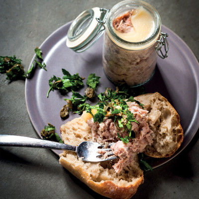

French Pork Rillette
Prep Time:
20 mins
Yield:
8
Ingredients
500 grams Rindless Pork Belly
4 Duck Legs
10 Juniper Berries (crushed)
200 grams Coarse Salt
1 ½ liters Duck Fat
1 Whole Nutmeg
add Crusty Bread (for serving)
add Italian Parsley (to garnish)
Price
One Plate: R38
Special: One Plate & cool drink: R55
EXTRAS
Cheese
Mushrooms
French Polony
Bread
Steps
Preheat your grill to medium heat.
Spread each slice of bread with butter on one side.
On the unbuttered side of 4 slices of bread, spread a tablespoon of mango chutney.
Layer the shredded cheese, sliced tomatoes, and sliced onions on top of the chutney.
Season with salt and pepper.
Top each sandwich with another slice of bread, buttered side up.
Grill the sandwiches over medium heat until the bread is toasted and the cheese is melted, about 5 minutes per side.
Slice the sandwiches in half and serve.
Enjoy your delicious Braaibroodjie sandwich! üçîüßÄüçÖüçû
Place Order Now